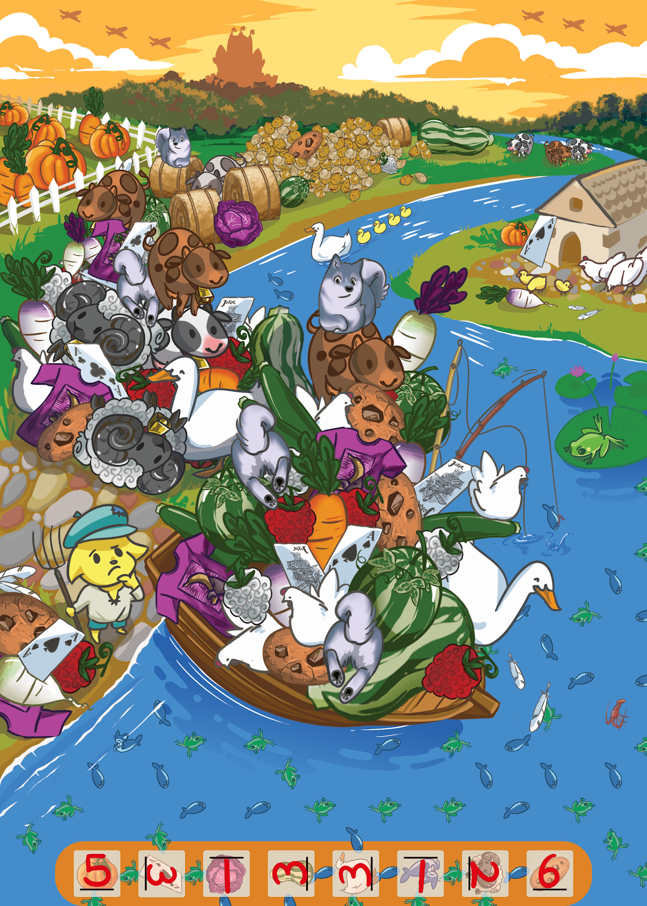
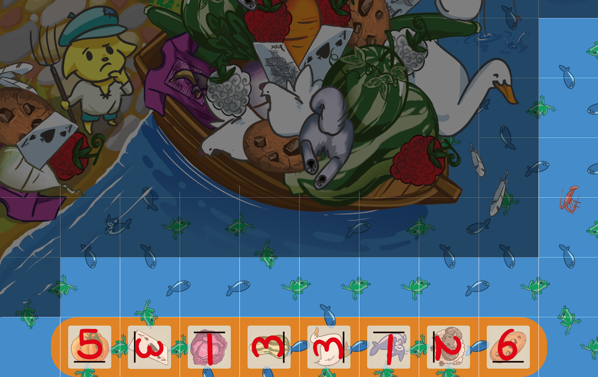

Solution: The Farmer's Dilemma
Answer: SWIMMING
Written by DD Liu
Construct the puzzle and fill in the blanks with the number of that object in the scene.
Here is the set of tiles where the background scenery doesn’t give away the position, i.e. the fish and frogs logic puzzle. The logic puzzle constrains the order and orientation of the blanks. Reading the numbers in these orientations spells out an answer to the farmer’s dilemma, forgoing the boat and SWIMMING across the river with everything at once.
One possible solution path: Notice that there are 10 tiles containing some orange, including 2 end caps, and guess that the 10 orange tiles form a row ending in the end caps. As it’s 10 across, they must all lie on the bottom row. The 2 corner tiles can be deduced. Next, the location of the lobster can be deduced. Then the blue area can be solved with 1 ambiguity, and finally the orange area resolves the ambiguity.
Author’s Notes
Since we had an Extreme Potato Counter puzzle, it was only fair that we eventually make a Potato Counter puzzle. The scenery is based on Meri Acres Farm. (Extreme Potato Counter and Potato Counter are both games from Neopets. Don’t worry, there aren’t any more Potato Counter games on Neopets, yet.)